Personajes
"En esta era de vapor y maquinaria, los elegidos por el destino tejen la historia del mundo."
— I —
Personajes Principales
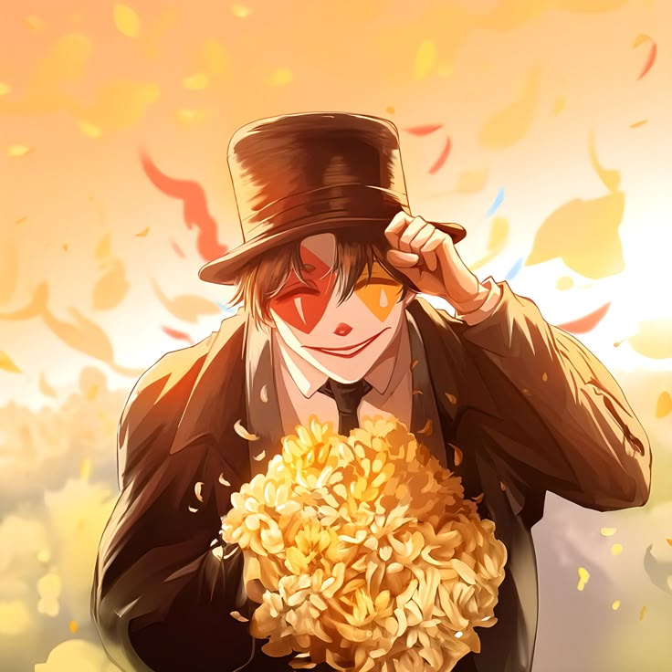
El Tonto • Arcano 0
Klein Moretti
"Mr. Fool" — El que no pertenece a esta era
Un joven universitario transmigrado a un mundo de misterio y magia victoriana. De humildes orígenes en Tingen, Klein despierta con extrañas memorias y una mente afilada que le permitirán ascender desde simple Misterioso hasta convertirse en el enigmático Mr. Fool, árbitro secreto del Club del Tarot.
Secuencia: Vidente ▸ Mentira ▸ Ilusionista ▸ Mago ▸ Destino
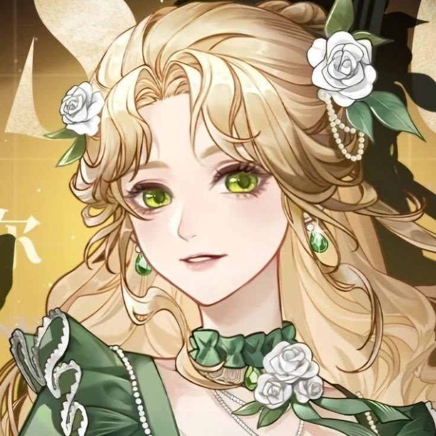
La Justicia • Arcano VIII
Audrey Hall
"Justice" — La aristócrata que busca la verdad
Hija del Conde Intis, embajador en Backlund, Audrey es una joven de excepcional inteligencia emocional que oculta tras su encantadora fachada social una curiosidad insaciable por los misterios del mundo. Miembro fundadora del Club del Tarot, domina la Secuencia del Espectador, capaz de leer el alma humana como si fuera un libro abierto.
Secuencia: Espectador ▸ Consejero ▸ Psicólogo ▸ Mentiroso Mente
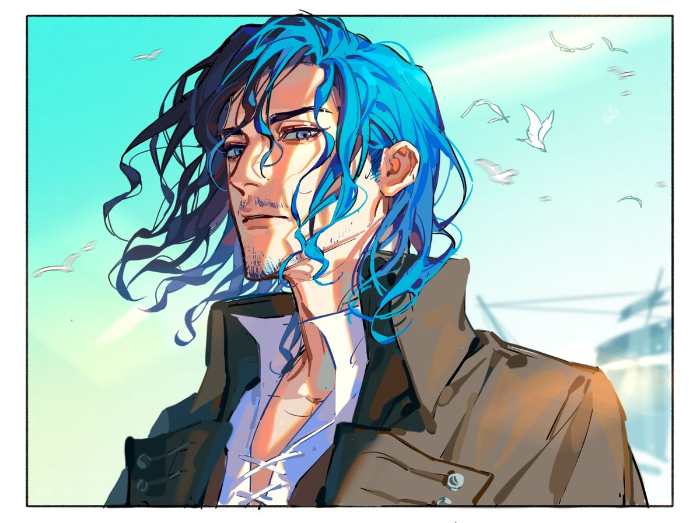
El Mundo • Arcano XXI
Alger Wilson
"The World" — El marinero de los mares tormentosos
Pirata con una identidad secreta como agente de la Iglesia del Señor de las Tormentas. Frío, pragmático y letal, Alger oculta bajo su exterior implacable un firme código moral y una misión personal de justicia. Su dominio de los mares y las tormentas lo convierte en uno de los Más Allá más temibles de los océanos.
Secuencia: Marinero ▸ Pirata ▸ Cazador de Tormentas ▸ Capitán Espectral

El Mago • Arcano I
Fors Wall
"Magician" — La narradora de lo imposible
Escritora de historias sobrenaturales en Backlund, Fors lleva una doble vida como Más Allá de la Secuencia del Vidente. Inteligente, vivaz y con una notable resistencia nacida de sus años sobreviviendo en los bajos fondos de la ciudad, sorprende con una sagacidad que contrasta con su aparente ligereza. Su pluma y su magia van de la mano.
Secuencia: Vidente ▸ Mentira ▸ Ilusionista ▸ Mago
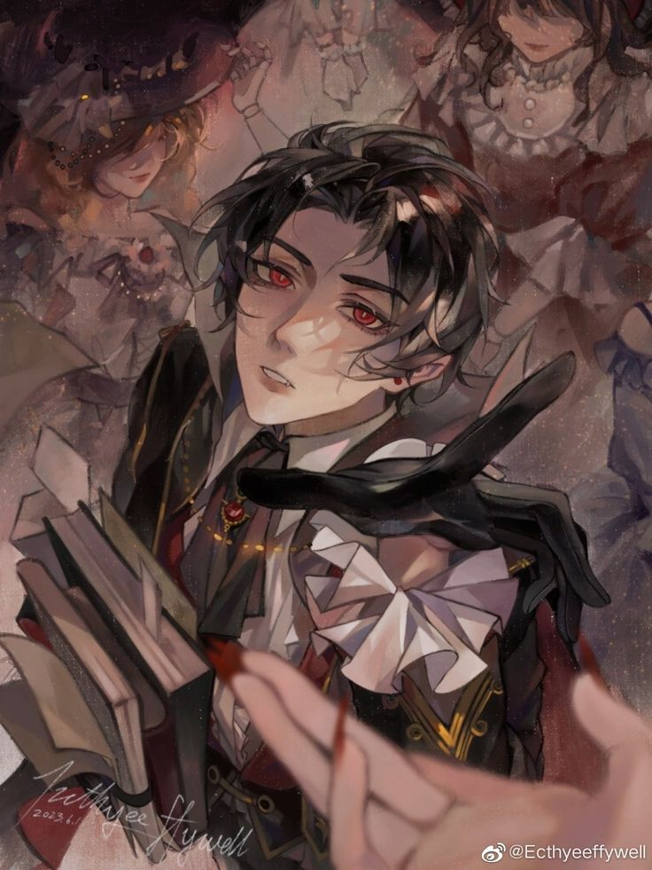
La Luna • Arcano XVIII
Emlyn White
"Moon" — El vampiro orgulloso de Backlund
Miembro de la raza Sanguínea —los vampiros— que reside en Backlund, Emlyn es arrogante, obsesionado con el honor de su linaje y terriblemente susceptible. Sin embargo, bajo su fachada altiva se esconde un código de nobleza genuina. Su incorporación al Club del Tarot marcará su transformación de joven inexperto a poderoso Más Allá.
Secuencia: Sanguíneo ▸ Señor de la Noche ▸ Príncipe de la Oscuridad
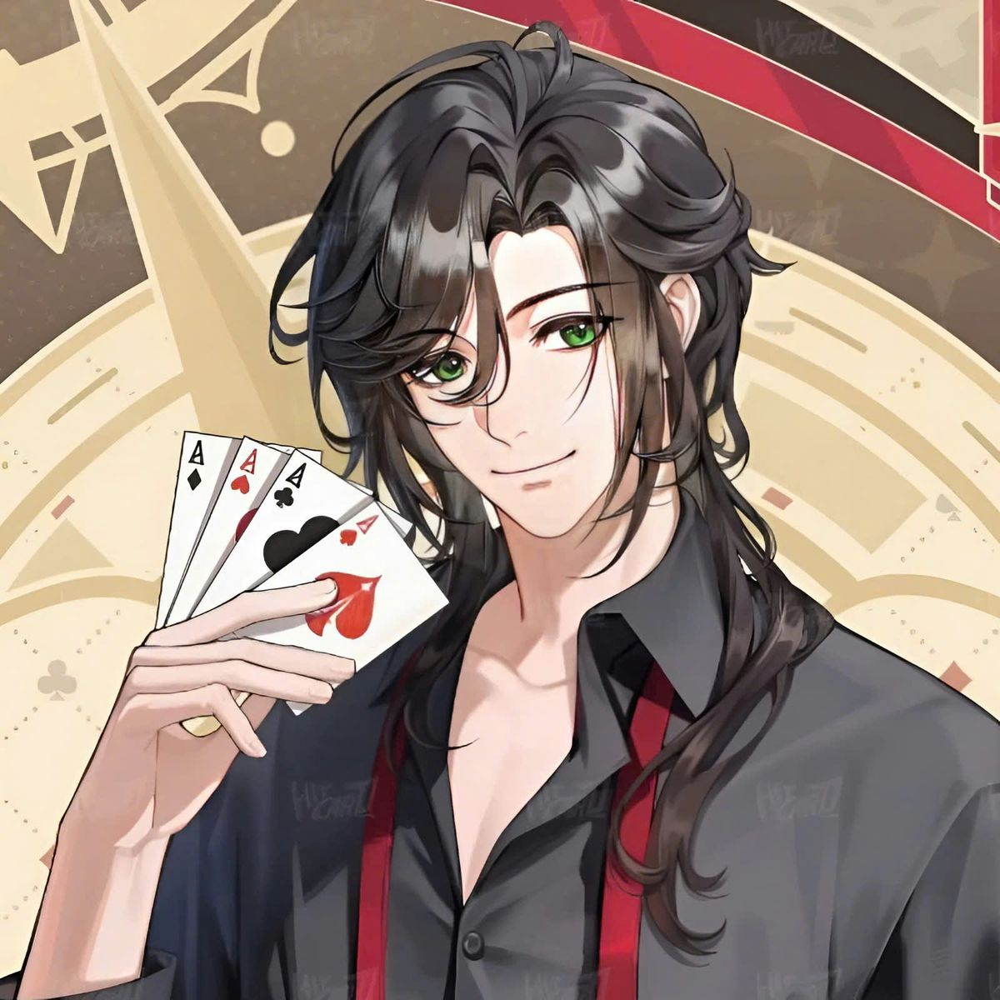
El Oráculo • Espíritu Inquieto
Leonard Mitchell
"Spirit Medium" — El portador de dos almas
Detective de Scotland Yard con un don misterioso: su cuerpo alberga el espíritu de un antiguo y poderoso ser. Filosófico, sereno ante el peligro y con un sentido del humor seco, Leonard navega entre el mundo de los vivos y los muertos con una ecuanimidad que oculta luchas interiores profundas y una herencia que podría definir el destino del mundo.
Secuencia: Médium Espiritual ▸ Buscador de Secretos ▸ Visagra del Destino
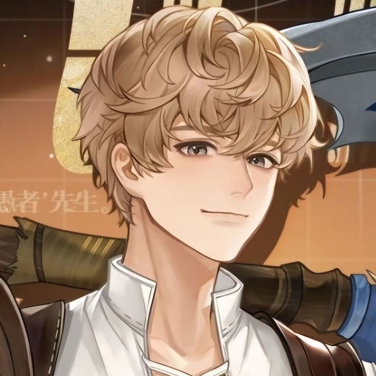
El Sol • Arcano XIX
Derrick Berg
"Sun" — El niño de la Ciudad de Plata
Miembro de la aislada Ciudad de Plata, Derrick creció en un mundo donde la oscuridad eterna devora la esperanza. Su fe inquebrantable y su deseo de proteger a su gente lo convierten en uno de los pilares emocionales del Club del Tarot. Bajo la guía del Fool, aprende a desafiar un destino que parecía inmutable.
Secuencia: Guerrero ▸ Sacerdote Solar ▸ Paladín del Alba
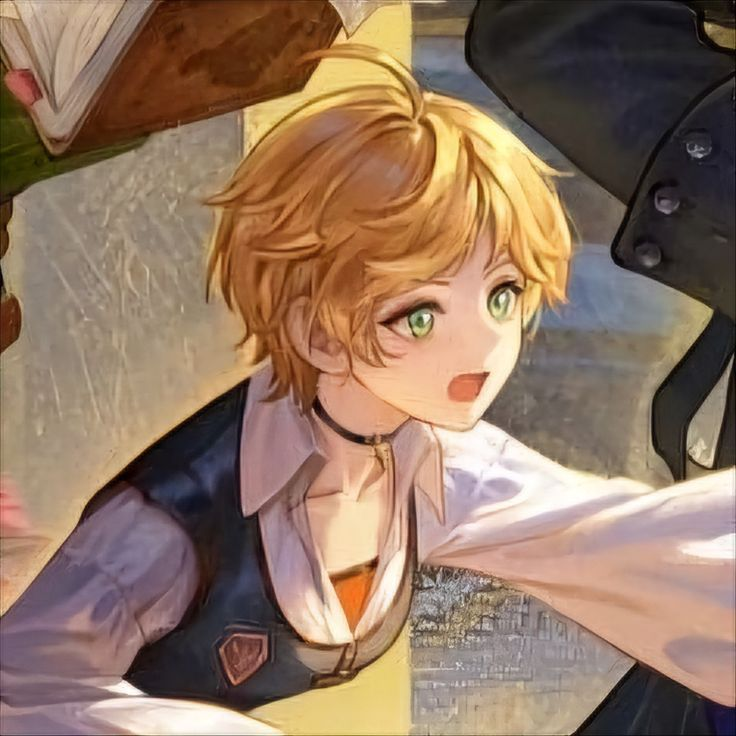
El Juicio • Arcano XX
Xio Derecha
"Judgement" — La ejecutora de la ley
Ex miembro del ejército loen y actual cazarrecompensas en Backlund. Xio es firme, directa y posee un fuerte sentido de la justicia. Su compromiso con el orden y su valentía la convierten en una fuerza implacable contra el crimen y lo sobrenatural.
Secuencia: Abogado ▸ Interrogador ▸ Ejecutor
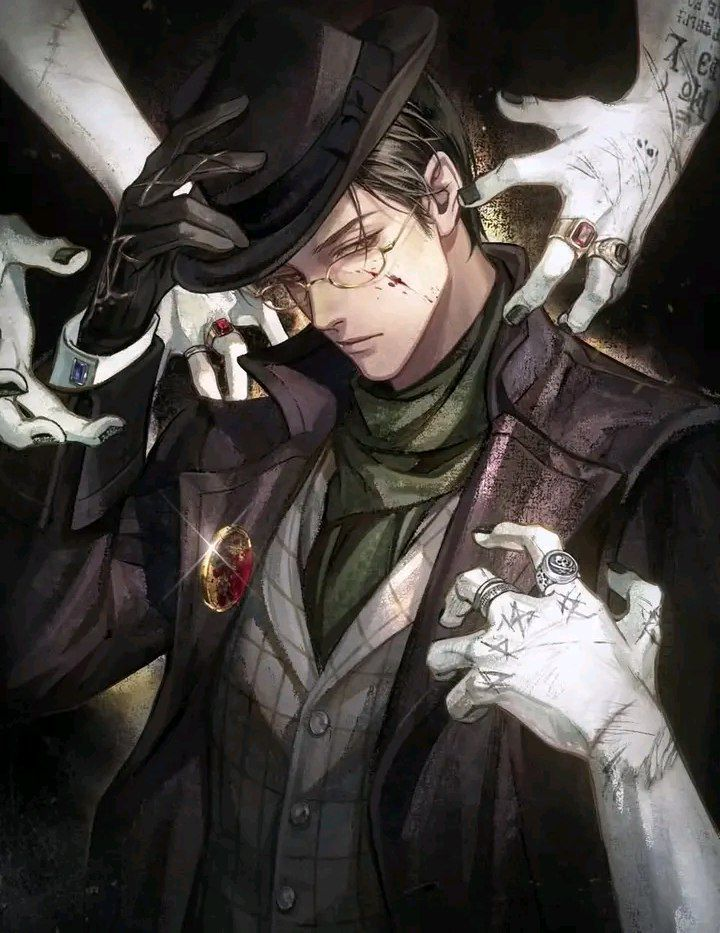
El Loco del Mar
Gehrman Sparrow
"El Aventurero Loco" — Identidad de Klein
La identidad aventurera adoptada por Klein en el mar. Frío, implacable y temido por piratas y nobles por igual, Gehrman es la máscara que permite al Fool moverse entre las sombras del océano y las conspiraciones divinas.
Secuencia: Vidente ▸ Marionetista ▸ Hechicero Milagroso
— II —
Personajes Secundarios
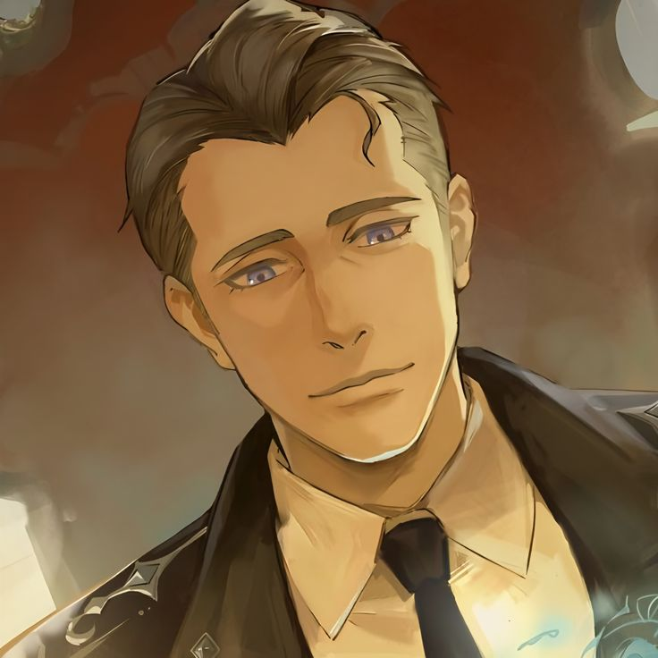
Capitán de los Halcones Nocturnos
Dunn Smith
"El Capitán" — Guardián de las sombras de Tingen
Capitán de la división Halcones Nocturnos de Tingen y primer mentor de Klein en el mundo de los Más Allá. Portador de secretos que pesan como montañas, Dunn es un hombre de acero moral que ha sacrificado todo en aras de la justicia. Su figura paterna y su calma ante los horrores del mundo imprimen una huella imborrable en Klein.
Secuencia: Cazador ▸ Rastreador ▸ Beholder
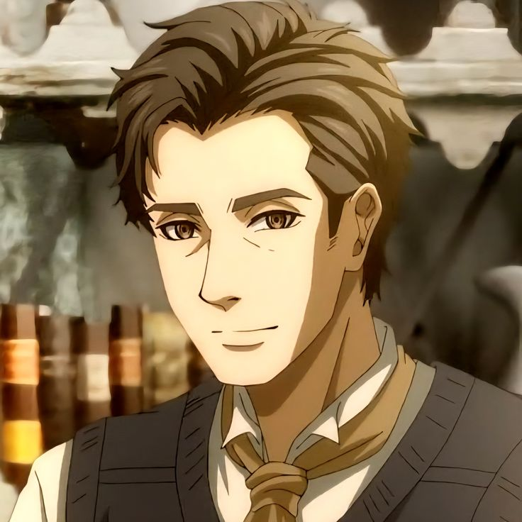
Civil — Hermano Mayor
Benson Moretti
"El Pilar" — El hermano que sostiene la familia
El hermano mayor de Klein, alma bondadosa y trabajadora que lleva sobre sus hombros la responsabilidad de mantener a la familia Moretti tras la muerte de sus padres. Empleado modelo sin ambiciones sobrehumanas, Benson representa la nobleza del hombre común, cuyos sacrificios cotidianos inspiran a Klein a proteger aquello que ama.
Civil — Sin Secuencia
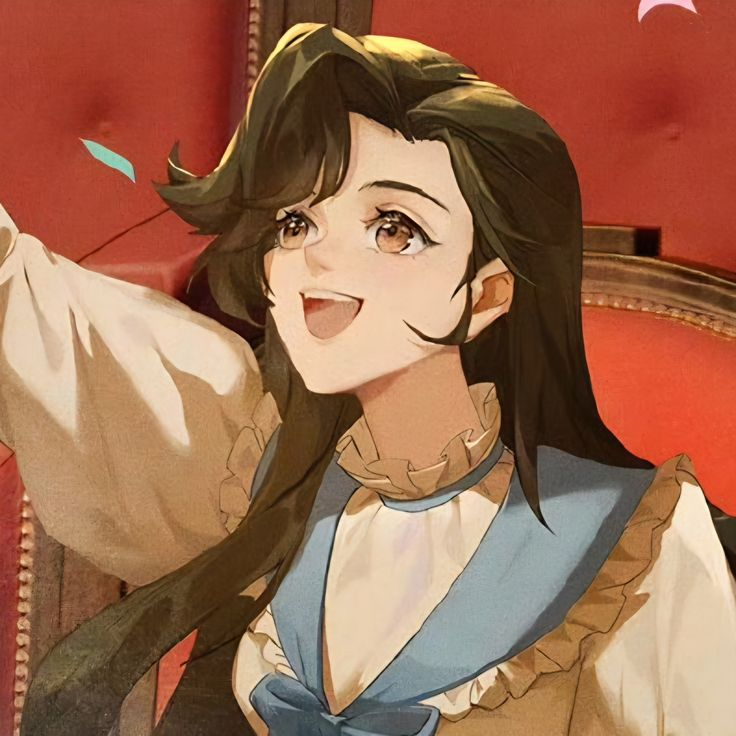
Civil — Hermana Menor
Melissa Moretti
"La Esperanza" — Luz en las calles de Tingen
La hermana menor de Klein, brillante y determinada estudiante que sueña con convertirse en enfermera. Su carácter firme y su inteligencia desmienten su corta edad. Para Klein, Melissa y Benson son el ancla que lo ata a su humanidad y la razón más profunda por la que se niega a perderse en los abismos del poder misterioso.
Civil — Sin Secuencia
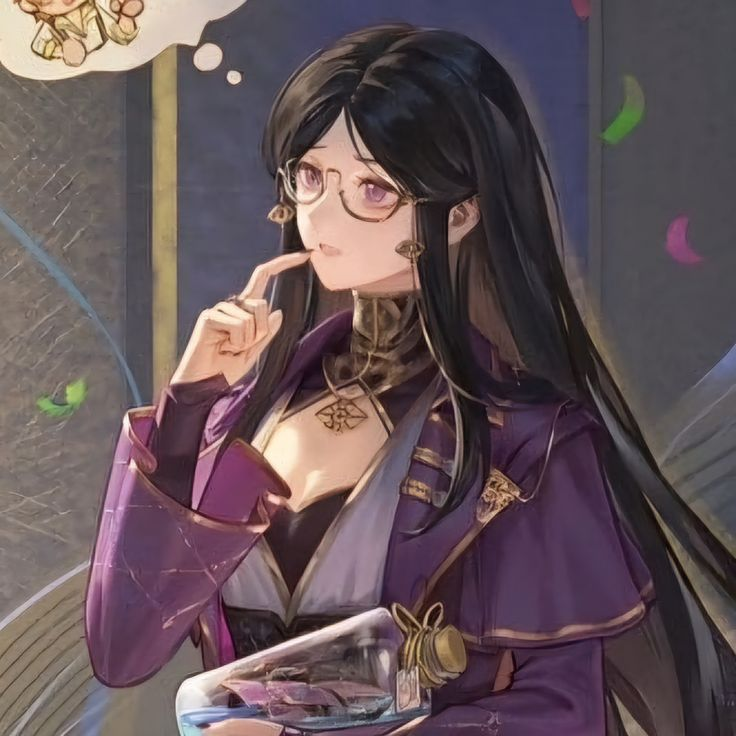
El Ermitaño • Arcano IX
Cattleya
"The Hermit" — Reina de los mares sin nombre
Una de las piratas más temibles y respetadas de los siete mares, Cattleya es una Más Allá de alto rango cuya belleza fría y presencia imponente ocultan décadas de combates y pérdidas. Su incorporación tardía al Club del Tarot añade una capa de poder y complejidad a la organización, aportando una perspectiva forjada en la supervivencia.
Secuencia: Pirata ▸ Exploradora ▸ Navegante de las Estrellas

El Emperador — El Transmigrado
Roselle Gustav
"El Loco Coronado" — Quien rehízo el mundo
Transmigrado de otro mundo como Klein, Roselle ascendió desde la nada hasta convertirse en el Emperador de Intis, transformando el mundo con su conocimiento fuera de época. Sus diarios —fragmentos de sabiduría, misterio y melancolía— son el hilo de Ariadna que guía a Klein por los laberintos más oscuros del poder divino.
Secuencia: Fool ▸ Calamity ▸ Arbiter ▸ King of Angels

El Destino • Laberinto Viviente
Reinette Tinekerr
"Fate" — La que todo lo ve con sus cuatro cabezas
Un ser extraordinario y perturbador: una joven cuya forma física desafía toda lógica, portadora de cuatro cabezas que representan distintos aspectos del Destino. Aliada ambigua del Club del Tarot, Reinette existe en los márgenes de la comprensión humana, ofreciendo información y servicios a un precio siempre incierto y siempre profundo.
Secuencia: Destino ▸ Oráculo ▸ Tejedora del Hilo
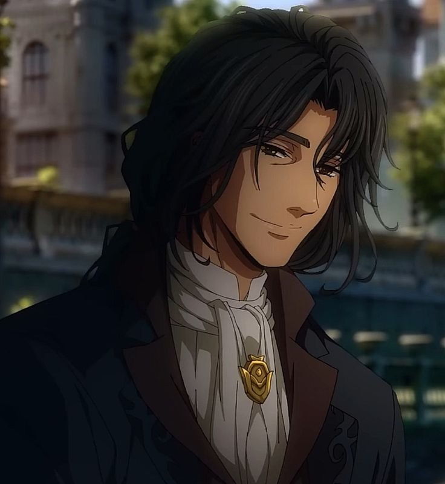
El Eterno Errante
Azik Eggers
El Hombre Sin Pasado
Profesor universitario y antiguo ser de alto rango vinculado al camino de la Muerte. Azik sufre ciclos de amnesia que ocultan una historia trágica ligada a los antiguos dioses. Su vínculo con Klein es profundo y decisivo.
Secuencia: Cónsul de la Muerte ▸ Mensajero del Inframundo
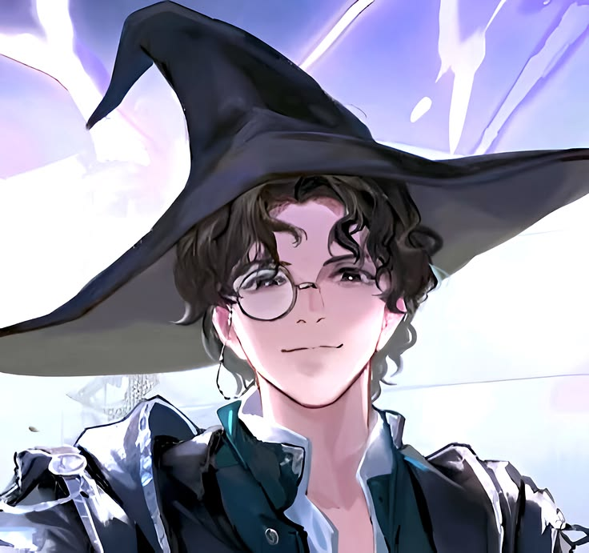
El Engañador • Rey de los Ángeles
Amon
El Dios del Engaño
Uno de los seres más peligrosos del mundo. Astuto, juguetón y absolutamente aterrador, Amon domina el engaño a un nivel conceptual. Su presencia convierte cualquier enfrentamiento en una partida imposible de prever.
Secuencia: Ladrón ▸ Parásito ▸ Rey de los Ángeles

El Visionario
Adam
El Observador del Mundo
Figura enigmática que manipula los acontecimientos desde las sombras. Su comprensión de la mente humana y de la estructura misma de la realidad lo convierten en uno de los seres más peligrosos y fundamentales del trasfondo cósmico.
Secuencia: Espectador ▸ Manipulador ▸ Visionario
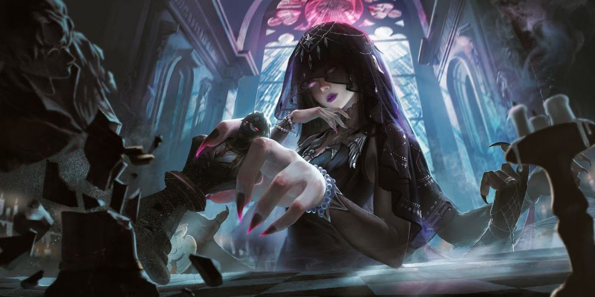
La Noche Eterna
Evernight Goddess
La Madre del Silencio
Deidad principal de la Iglesia de la Noche Eterna. Misteriosa y compasiva, su influencia se extiende por todo el continente. Su relación con Klein y los eventos finales de la historia es fundamental.
Diosa — Secuencia 0